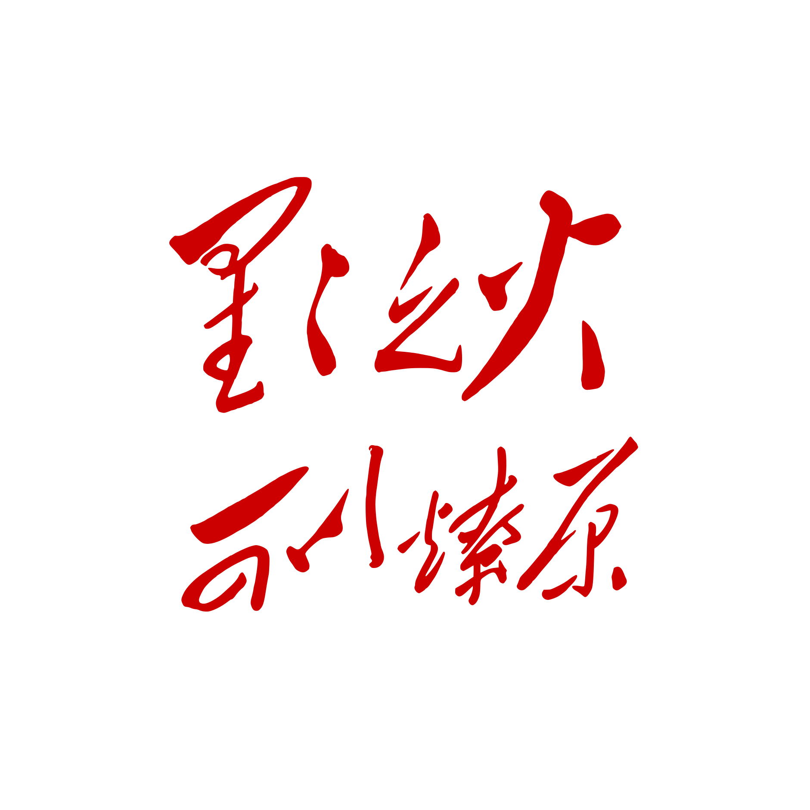

学习 · 批判 · 实践
抛弃庸俗化的学术解释，回归马列毛主义的基本原理。用历史唯物主义和辩证唯物主义武装头脑，掌握分析当代社会的终极武器。
梳理马克思主义在同各种错误思潮、机会主义路线和修正主义斗争中的发展过程，把握革命理论不是抽象继承，而是在阶级斗争和路线斗争中形成的历史脉络。
回溯《共产党宣言》发表以来的世界革命史，梳理共产主义运动的关键节点，总结成功经验与失败教训，思考未来道路。
"这是最后的斗争，团结起来到明天！"
起来，饥寒交迫的奴隶！
起来，全世界受苦的人！
满腔的热血已经沸腾，
要为真理而斗争！
旧世界打个落花流水，
奴隶们起来，起来！
不要说我们一无所有，
我们要做天下的主人！
这是最后的斗争，
团结起来到明天，
英特纳雄耐尔就一定要实现！
从来就没有什么救世主，
也不靠神仙皇帝！
要创造人类的幸福，
全靠我们自己！
我们要夺回劳动果实，
让思想冲破牢笼！
快把那炉火烧得通红，
趁热打铁才能成功！
是谁创造了人类世界？
是我们劳动群众！
一切归劳动者所有，
哪能容得寄生虫！
最可恨那些毒蛇猛兽，
吃尽了我们的血肉！
一旦把它们消灭干净，
鲜红的太阳照遍全球！
